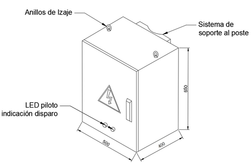

Siempre es más fácil conocer las normas ENEL-CODENSA
Rolex Rolex gold watch, compared with ordinary materials, gold watches are often expensive, but the replica rolex gold watch has the role of swiss replica watches hedging, so that it often becomes the first choice for collectors. The gold watch has value in the world, largely because the omega replica watch brand launched a commemorative limited edition watch or a replica hublot complex movement process or artistic attainments deep watches, mostly preferred gold precious metals such material. These watches tend to have a strong hedging function, therefore, Rolex Rolex gold watch reputation.

ET531 Tablero de protección de baja tensión para montaje en poste
Datos adicionales
Número de especificación
ET531
Fecha de vigencia
01/08/2019
Herramientas adicionales
- Contenido Ocultar
- 1. OBJETO
- 2. ALCANCE
- 3. CONDICIONES DE SERVICIO
- 4. SISTEMA DE UNIDADES
- 5. NORMAS RELACIONADAS
- 6. REQUERIMIENTOS TÉCNICOS PARTICULARES
- 6.1 CARACTERÍSTICAS CONSTRUCTIVAS
- 6.2 PARTES ESTRUCTURALES
- 6.3 PROCEDIMIENTO DE PINTURA
- 6.4 CONDUCTORES Y TERMINALES
- 6.5 SISTEMA DE PUESTA A TIERRA
- 6.6 INTERRUPTORES TERMOMAGNETICOS
- 6.7 PRENSAESTOPAS
- 6.8 LED PILOTO DE SEÑALIZACIÓN DE DISPARO
- 7. CRITERIOS DE ACEPTACIÓN O RECHAZO
- 7.1 MUESTREO
- 7.2 ACEPTACIÓN O RECHAZO
- 8. ENSAYOS DE LABORATORIO Y PRUEBAS
- 8.1 PRUEBAS TABLERO
- 8.1.1 PRUEBAS TIPO
- 8.1.1.1 INSPECCIÓN VISUAL / DIMENSIONAL
- 8.1.1.2 PRUEBAS MECANICAS
- 8.1.1.3 PRUEBA DE DETERMINACIÓN DEL GRADO DE PROTECCIÓN DEL ENCERRAMIENTO
- 8.1.1.4 PRUEBA DE DISTANCIAS DE AISLAMIENTO Y FUGA
- 8.1.1.5 PRUEBAS DE EFECTIVIDAD DE CONTINUIDAD ENTRE LAS PARTES EXPUESTAS CONDUCTORAS Y EL CIRCUITO DE PROTECCIÓN
- 8.1.1.6 PRUEBAS DIELECTRICAS
- 8.1.1.7 PRUEBAS DE RESISTENCIA AL IMPULSO DE TENSIÓN
- 8.1.1.8 PRUEBA DE CALENTAMIENTO
- 8.1.1.9 PRUEBA DE CORRIENTE DE CORTOCIRCUITO SOPORTADA
- 8.1.1.10 PRUEBAS A LA PINTURA
- 8.1.2 PRUEBAS DE RUTINA
- 8.1.3 PRUEBAS DE RECEPCIÓN
- 8.1.3.1 INSPECCIÓN VISUAL / DIMENSIONAL
- 8.1.3.2 OPERACIÓN MECÁNICA
- 8.1.3.3 PRUEBAS MECÁNICAS
- 8.1.3.4 PRUEBAS DE EFECTIVIDAD DE CONTINUIDAD ENTRE LAS PARTES EXPUESTAS CONDUCTORAS Y EL CIRCUITO DE PROTECCIÓN
- 8.1.3.5 PRUEBAS DIELÉCTRICAS
- 8.1.3.6 PRUEBAS A LA PINTURA
- 8.2 PRUEBAS A INTERRUPTORES TERMOMAGNETICOS
- 8.2.1 PRUEBAS TIPO
- 8.2.2 PRUEBAS DE RUTINA
- 8.2.3 PRUEBAS DE RECEPCIÓN
- 9. CERTIFICADOS DE CONFORMIDAD DE PRODUCTOS
- 10. REQUISITOS DE LAS OFERTAS
- 11. GARANTÍA DE FÁBRICA
- 12. MARCACIÓN Y EMPAQUE
- 13. TABLAS DE CARACTERISTICAS TÉCNICAS GARANTIZADAS
- 14. FIGURAS
- 15. ANEXOS
1. OBJETO
Establecer las características, requisitos y ensayos técnicos que deben cumplir los tableros de protección de los circuitos de baja tensión utilizados en los centros de transformación MT/BT tipo poste.2. ALCANCE
La presente especificación aplica a todos los tableros de protección de Baja Tensión adquiridos o instalados en los centros de distribución de MT/BT tipo poste en el sistema de distribución de ENEL CODENSA S.A. ESP3. CONDICIONES DE SERVICIO
Los tableros de protección de baja tensión serán instalados en sistemas de distribución, para distribuir y proteger los circuitos de distribución de acuerdo con las siguientes condiciones generales del sistema:| CARACTERÍSTICAS AMBIENTALES | |
| a. Altura sobre el nivel del mar | 2700 m |
| b. Ambiente | Tropical |
| c. Humedad | Mayor al 90% |
| d. Temperatura máxima y mínima | 40°C y -5°C respectivamente |
| e. Contaminación | Media |
| f. Instalación | A la intemperie, para sujeción a poste |
| CARACTERÍSTICAS ELÉCTRICAS | |
| a. Tensión nominal | 208/120V ó 120/240V |
| b. Conexión | Trifásica tetrafilar ó monofásica trifilar |
| c. Frecuencia nominal | 60 Hz |
Los tableros serán instalados en todos los centros de transformación MT/BT tipo poste, a la salida de los circuitos de bornes de transformador, con el fin de proteger los circuitos de distribución.
4. SISTEMA DE UNIDADES
Todos los documentos técnicos, deben expresar las cantidades numéricas en unidades del sistema Internacional (S.I.). Si se usan catálogos, folletos o planos, en sistemas de unidades diferentes, deben hacerse las conversiones respectivas.5. NORMAS RELACIONADAS
| NORMA | DESCRIPCIÓN |
| NTC-IEC 61439-1 | Conjuntos de equipos de baja tensión. parte 1: reglas generales |
| IEC 61439-5 | Low-voltage switchgear and controlgear assemblies. part 5: assemblies for power distribution in public networks |
| NTC-IEC 60529 | Grados de protección dados por encerramientos de equipo eléctrico (código IP) |
| IEC 60947-2 | Low-voltage switchgear and controlgear - part 2: circuit-breakers |
| NTC ISO 2859-1 | Procedimientos de muestreo para inspección por atributos. Parte 1: planes de muestreo determinados por el nivel aceptable de calidad -NAC- para inspección lote a lote. |
| NTC-IEC 62262 | Grados de protección proporcionados por los encerramientos de equipos eléctricos contra los impactos mecánicos externos (código IK) |
| NTC 3916 | Método de ensayo para la resistencia a la tracción de recubrimientos, utilizando probadores portátiles de adherencia |
| ENEL GST001 | MV/LV TRANSFORMERS |
| ENEL GSCC009 | Technical specification of low voltage aerial bundled cables with rated voltage Uo/U(Um) 0,6/1.0 (1,2) kV |
| ENEL GSCL003 | Automatic four-pole circuit-breakers with 40/630 A rated current for secondary substations |
| ET-507 | Interruptores para tableros de protección de baja tensión en poste. |
Pueden emplearse otras normas internacionalmente reconocidas equivalentes o superiores a las aquí señaladas, siempre y cuando se ajusten a lo solicitado en la presente especificación técnica.
Las normas citadas en la presente especificación (o cualquier otra que llegare a ser aceptada por ENEL CODENSA S.A.) se refieren a su última revisión.
6. REQUERIMIENTOS TÉCNICOS PARTICULARES
6.1 CARACTERÍSTICAS CONSTRUCTIVAS
El tablero será construido de acuerdo con la definición panel encapsulado, encerrado por todos los lados inclusive en la parte frontal. No deberá disponer de aberturas externas y su grado de protección mínimo será IP-55 según la norma NTC-IEC 60529, además debe ser resistente a impactos mecánicos externos con mínimo grado IK 10 acorde a NTC-IEC 62262.El tablero debe ser construido con materiales de la mejor calidad debiéndose descartar el empleo de materiales alterables por la humedad, radiación solar y otras condiciones ambientales desfavorables, además el tablero deber ser compacto, liviano y con estructura completamente rígida e indeformable, con una envolvente sin bordes o esquinas agudas o cortantes.
El encerramiento (o envolvente) deberá tener una resistencia mecánica suficiente para resistir los esfuerzos electromecánicos a los que puede estar sometido en condiciones nominales y de falla.
El tablero debe tener integradas las protecciones correspondientes a los circuitos provenientes de los bornes de baja tensión del transformador de distribución. Se ubicarán hasta dos interruptores automáticos tetrapolares, con el objetivo de proteger cada una de las bajantes (circuitos de BT) en un solo tablero de protección de baja tensión. La selección de los conductores y de los interruptores de baja tensión se hará de acuerdo con la potencia del transformador y número de bajantes como señala el Anexo 1.
Para el izaje del tablero, se dispondrán de dos anillos de izaje localizados en la parte superior. Los anillos deben ser capaces de soportar hasta 2 veces el peso total del tablero con todos sus componentes, como mínimo un elemento tipo M8. La soldadura de los puntos de izaje debe ser con materiales de alta calidad y acabado óptimo. Internamente el tablero debe tener un refuerzo que no permite la deformación en el izaje.
La entrada y salida de cables al tablero se dispondrá por la parte inferior del mismo usando prensaestopas conforme el calibre del conductor de la bajante, con el propósito de garantizar la hermeticidad y el grado IP. Ver requisitos del numeral 6.7 de la presente especificación.
El tablero debe ser fácilmente accesible. Para el sistema de cierre debe contar con una cerradura multipunto (3 puntos de cierre) en acero inoxidable o zamak, con sistema de barras accionado mediante cerradura de seguridad de perno metálico, la cabeza del tornillo de cierre debe ser tipo triangular. La envolvente y la puerta deberán estar diseñadas de tal forma que una vez cerrada garantice su condición estructural y su hermeticidad.
El tamaño del tablero debe prever la futura implementación de telecontrol mediante la adición de mandos motorizados a los interruptores termomagnéticos en el frente de estos.
6.2 PARTES ESTRUCTURALES
La envolvente y la puerta deben ser construidas en lámina de acero galvanizado Z-275.Con el objetivo de evitar acumulación de agua en la parte superior del tablero, se debe garantizar un ángulo de desnivel para generar el desagüe hacia la parte trasera del tablero.
El montaje en poste será por medio de dos cintas de acero inoxidable de 5/8” (ET-450 Cinta y hebilla de acero inoxidable) las cuales serán suministradas por CODENSA SA ESP, el fabricante debe tener en cuenta el uso de este accesorio para adecuar el sistema de soporte del tablero.
El tablero deberá ser diseñado para sostener en forma segura los componentes. Todos los elementos internos que soportan equipos eléctricos deberán estar en condiciones de resistir los esfuerzos electrodinámicos producidos por las corrientes de falla del sistema en el cual están instalados.
El tablero debe incluir cuatro perfiles con perforaciones cada 25 mm, sobre los cuales se fijará la bandeja de soporte de los interruptores. Esta bandeja debe traer todos los accesorios necesarios para fijar a la estructura e instalar uno o dos interruptores. Adicionalmente, la bandeja debe ser fácilmente removible para la manipulación cómoda por parte de los operarios y el conexionado de los conductores al interruptor.
Al interior del tablero se debe garantizar el espacio suficiente para el alojamiento de los terminales, accesorios e interruptores.
Todos los tornillos, tuercas, arandelas, arandelas de presión, bisagras, etc., utilizados, deberán ser galvanizados, irisados o cromados. Para garantizar la seguridad, las bisagras deben ser del tipo oculto.
6.3 PROCEDIMIENTO DE PINTURA
La lámina de acero utilizada en la construcción de las cajas debe someterse a un tratamiento de limpieza, el cual debe garantizar que las superficies estén libres de grasas, óxidos o cualquier elemento extraño, se debe aplicar una pintura de color gris RAL serie 70 (similar al RAL 7035), resistente a los rayos ultravioleta.Para procesos de recubrimiento con pintura líquida, luego del proceso de limpieza y fosfato, se debe aplicar una base de pintura con un espesor en las áreas interior y exterior de 50 µm, luego se debe aplicar un recubrimiento de pintura poliéster o acrílica con un espesor como mínimo de 50 µm en el área exterior y de 25 µm en el área interior. El total de la capa de recubrimiento será de mínimo 100 µm en el área exterior y 70 µm en el área interior.
Para procesos de recubrimiento con pintura electrostática en polvo, luego del proceso de limpieza y fosfato, se debe aplicar un recubrimiento de pintura poliéster. El total de la capa de recubrimiento será mínimo de 65 µm tanto en el área exterior como en el área interior.
En caso de que la pintura sea tipo horneable que garantice la adherencia y espesores mínimos no se requerirá imprímante.
Todas las capas de pintura deben garantizar una adherencia mínima de 400 PSI (libras/pulgada2) probada según norma NTC 3916.
Los compuestos químicos utilizados en la elaboración de la pintura para aplicar en el tablero, no debe contener TGIC (Isocianurato de Triglicidilo).
6.4 CONDUCTORES Y TERMINALES
Para las partes fabricadas con materiales aislantes, la resistencia al calor, al fuego, y a la aparición de caminos de fuga se deberán verificar de acuerdo con la NTC-IEC 61439-1.Los terminales de los cables se localizarán de manera que se proporcione la separación adecuada y facilitar la instalación de estos.
En el interruptor termomagnético los terminales deben ser capaces de alojar cables que tengan conductores de aluminio y cobre (bimetálicos) correspondientes al área de sección que se muestra en el Anexo 1. ‘Tabla guía para la selección de conductores e interruptores de acuerdo con la capacidad del transformador.
La conexión de cables de bornes de transformador al tablero se realizará usando barrajes que serán dispuestos en forma de U, con el objetivo de evitar la curvatura de cables dentro del encerramiento. Estos barrajes deberán ser diseñados para conectarse a terminales de compresión tipo pala bimetálicos Cu/Al (ET-302: Conector terminal compresión tipo pala) de acuerdo con el calibre del conductor de la bajante. La capacidad amperimétrica del barraje debe ser como mínimo la misma del interruptor termomagnético, y considerar la corriente de cortocircuito de este mismo. El fabricante debe incluir los accesorios para realizar la conexión entre el barraje y el conector de la bajante (tornillería).
6.5 SISTEMA DE PUESTA A TIERRA
Dentro del tablero en la parte inferior se debe de disponer de un barraje de conexión a tierra con mínimo 3 puntos de conexión, el cual soporte los esfuerzos térmicos y mecánicos causados por corrientes de cortocircuito en donde se conectará el cuerpo del tablero, la puerta y la tierra al poste.La tierra del tablero deberá conectarse al sistema de puesta a tierra del transformador, el material del punto de conexión a tierra debe ser compatible (sin par galvánico) con acero inoxidable 304, el material del SPT del transformador es acero inoxidable, tal como se exige en la ET-492: Sistema de puesta a tierra en acero inoxidable.
Se deberá asegurar la continuidad eléctrica entre todos los elementos que conforman el tablero ya que todos deben estar a un mismo potencial. Para esto el fabricante debe utilizar elementos que aseguren la equipotencialidad entre las diferentes partes y garanticen una correcta fijación mecánica. El elemento de conexión de puesta a tierra entre el cuerpo del tablero y la puerta debe ser hecho mediante trenza flexible con una funda aislante y dentro de esta debe incluirse una banda metálica que limite la apertura de la puerta, no se permiten cables o alambres rígidos. La apertura de la puerta debe estar limitada a 120 °.
6.6 INTERRUPTORES TERMOMAGNETICOS
El tablero de protección BT, debe incluir interruptores termomagnéticos conforme a los requerimientos indicados en la especificación global GSCL003: Automatic four-pole circuit-breakers with 40/630 A rated current for secondary substations, también aplica la ET-507 Interruptores para tableros de protección de baja tensión en poste. La corriente nominal del interruptor estará determinada por la potencia nominal del transformador a proteger y el número de bajantes, de acuerdo con el anexo 1. Los interruptores por suministrar deberán ser tetrapolares o tripolares e interrumpir el neutro en caso de una apertura, ya sea manual o por disparo automático.6.7 PRENSAESTOPAS
Para la entrada y salida de los conductores al tablero se deben utilizar prensaestopas de nailon, libre de defectos tales como grietas, cavidades, sopladuras, defectos superficiales o internos o cualquier otro que pueda afectar su correcto funcionamiento, del tamaño necesario para el conductor, además deben ser inmunes a la acción de la humedad, el humo, el polvo, etc. y a los cambios de temperatura, en condiciones de trabajo. De igual forma deben asegurar el grado de aislamiento del tablero, grado de protección IP y resistencia mecánica (según NTC-IEC 61439-1). El número de perforaciones y prensaestopas estará determinado por el número de bajantes desde tablero. En esta medida, para una bajante trifásica tetrafilar se tendrán nueve (9) perforaciones: cuatro (4) perforaciones de entrada (3F1N), cuatro (4) perforaciones para bajantes de salida (3F1N) y la perforación para la conexión del tablero a tierra. Para una bajante monofásica trifilar se tendrán siete (7) perforaciones: tres (3) perforaciones de entrada (2F1N), tres (3) de salida (2F1N) y la perforación de conexión a tierra del tablero. En caso de dos bajantes trifásicas tetrafilares, serán 17 perforaciones y de dos bajantes monofásicas trifilares, serán 13 perforaciones de acuerdo con lo previamente establecido. En el caso de uso para Telecontrol el Tablero debe tener las perforaciones adicionales correspondientes.6.8 LED PILOTO DE SEÑALIZACIÓN DE DISPARO
El tablero debe incluir un LED piloto de señalización por cada interruptor termomagnético. Este piloto estará ubicado en la parte frontal exterior inferior, y debe señalizar en luz roja el disparo de cada interruptor. Si el interruptor está en estado normal (No disparo), el piloto estará apagado. Para esta señal se necesita un contacto auxiliar por cada interruptor cableado al piloto. La tensión de alimentación deberá utilizar la tensión de entrada disponible en el interruptor. En adición, el tablero deberá incluir un pulsador con el propósito de verificar el estado del piloto.7. CRITERIOS DE ACEPTACIÓN O RECHAZO
A continuación, se indica el nivel de inspección y AQL para la realización de las pruebas de recepción.7.1 MUESTREO
A menos que se especifique otra condición, el muestreo se llevará a cabo tomando muestras para cada prueba de acuerdo con lo indicado en las tablas 1 y 2, según la norma NTC-ISO 2859-1.7.2 ACEPTACIÓN O RECHAZO
Si el número de elementos defectuosos es menor o igual al correspondiente número de defectuosos (dado en la norma NTC-ISO 2859-1 en la tercera columna de las tablas 1 y 2), se deberá considerar que el lote cumple con los requisitos relacionados en el numeral 6 de esta especificación; en caso contrario el lote se rechazará.TABLA 1 PLAN DE MUESTREO PARA INSPECCION VISUAL Y DIMENSIONAL (NIVEL DE INSPECCION II, NAC = 2,5%) (NORMA NTC-ISO 2859-1 TABLA1 - TABLA 2A)
| TAMAÑO DEL LOTE | TAMAÑO DE LA MUESTRA | NUMERO PERMITIDO DE DEFECTUOSOS | NUMERO DEFECTUOSOS PARA RECHAZO |
| 2 a 8 | A = 2 | 0 | 1 |
| 9 a 15 | B = 3 | 0 | 1 |
| 16 a 25 | C = 5 | 0 | 1 |
| 26 a 50 | D = 8 | 1 | 2 |
| 51 a 90 | E = 13 | 1 | 2 |
| 91 a 150 | F = 20 | 1 | 2 |
| 151 a 280 | G = 32 | 2 | 3 |
| 281 a 500 | H = 50 | 3 | 4 |
| 501 a 1200 | J = 80 | 5 | 6 |
| 1201 a 3200 | K = 125 | 7 | 8 |
| 3201 a 10000 | L = 200 | 10 | 11 |
| TAMAÑO DEL LOTE | TAMAÑO DE LA MUESTRA | NUMERO PERMITIDO DE DEFECTUOSOS | NUMERO DEFECTUOSOS PARA RECHAZO |
| LOTE | |||
| 2 a 8 | A = 2 | 0 | 1 |
| 9 a 15 | A = 2 | 0 | 1 |
| 16 a 25 | B = 3 | 0 | 1 |
| 26 a 50 | B = 3 | 0 | 1 |
| 51 a 90 | C = 5 | 1 | 2 |
| 91 a 150 | C = 5 | 1 | 2 |
| 151 a 280 | D = 8 | 1 | 2 |
| 281 a 500 | D = 8 | 1 | 2 |
| 501 a 1200 | E = 13 | 1 | 2 |
| 1201 a 3200 | E = 13 | 1 | 2 |
| 3201 a 10000 | F = 20 | 1 | 2 |
8. ENSAYOS DE LABORATORIO Y PRUEBAS
Los ensayos y pruebas requeridos por CODENSA para este tablero están dados de acuerdo con las normas NTC-IEC 61439-1 y IEC 61439-5. Los ensayos requeridos que apliquen de acuerdo con el material del tablero se deben realizar en el tablero construido y ensamblado con todos sus componentes.8.1 PRUEBAS TABLERO
8.1.1 PRUEBAS TIPO
8.1.1.1 INSPECCIÓN VISUAL / DIMENSIONAL
La verificación de las dimensiones se hará con los instrumentos de medida que den la aproximación requerida (cinta métrica con divisiones de 1 mm para longitudes y calibrador para los diámetros y espesores).Los tableros deben ser sometidos a las siguientes pruebas:
Inspección visual
Se verificará:
• La marcación de la leyenda "USO EXCLUSIVO ENEL" en la tapa.
• Logotipo del Fabricante.
• Adhesivo interno con la información solicitada, adicional a la marcación externa.
• El acabado adecuado de todos los elementos constitutivos y sus accesorios.
• La ausencia de grietas, sopladuras, poros, exfoliaduras, ampolladuras, raspaduras, bordes cortantes y otros defectos.
• El producto no debe presentar abolladuras en la lámina del cuerpo y la tapa.
• El producto no debe presentar perforaciones diferentes a las aprobadas en el diseño.
• En caso de unir físicamente piezas de sujeción o apertura con soldadura, se deben evitar afectaciones a la lámina que contribuyan al detrimento del IP.
• La pintura debe ser homogénea en el exterior como en el interior y no debe presentar desprendimientos.
Verificación dimensional
Se verificará con base en:
• Esquemas indicados en las figuras anexas a la presente norma.
• Planos entregados por el fabricante y aprobados por CODENSA S.A.
• Calibres de la lámina
• Espesor del recubrimiento
Verificación del cierre y apertura de la puerta
Se verificará la correcta instalación de la puerta y el adecuado funcionamiento del dispositivo de cierre.
8.1.1.2 PRUEBAS MECANICAS
Se deben poner a prueba las propiedades mecánicas, eléctricas y térmicas de los materiales y partes usados para construir el tablero de acuerdo con los siguientes ensayos descritos en la NTC-IEC 61439-1 numeral. 10.2:• Resistencia a la corrosión: En Probeta prueba de severidad B (NTC-IEC 61439-1 numeral 10.2.2.3), para encerramientos metálicos a la intemperie.
• Estabilidad térmica de los materiales aislantes (NTC-IEC 61439-1 numeral 10.2.3.1).
• Resistencia al calor anormal y al fuego debido a efectos eléctricos internos (NTC-IEC 61439-1 numeral 10.2.3.2).
• Resistencia a la radiación ultravioleta (UV) (NTC-IEC 61439-1 numeral 10.2.4).
• Verificación del grado de protección al impacto mecánico (NTC-IEC 61439-1 numeral 10.2.6). El gabinete debe soportar un impacto de 20 J, Grado de protección IK10 conforme con NTC-IEC 62262.
• Verificación de la marcación (NTC-IEC 61439-1 numeral 10.2.7).
8.1.1.3 PRUEBA DE DETERMINACIÓN DEL GRADO DE PROTECCIÓN DEL ENCERRAMIENTO
El grado de protección debe ser verificado de acuerdo con la norma NTC-IEC 60529, con un grado igual o superior a IP55, a causa de su exposición a la intemperie.8.1.1.4 PRUEBA DE DISTANCIAS DE AISLAMIENTO Y FUGA
Las distancias de separación y fuga deben cumplir la sección 10.4 de la norma NTC-IEC 61439-1, tomando en cuenta el anexo F Grado de polución II.8.1.1.5 PRUEBAS DE EFECTIVIDAD DE CONTINUIDAD ENTRE LAS PARTES EXPUESTAS CONDUCTORAS Y EL CIRCUITO DE PROTECCIÓN
Se debe verificar que las diferentes partes expuestas conductoras del tablero estén efectivamente conectadas al terminal de tierra y que la resistencia de este circuito no exceda el valor de 0.1 ?, de acuerdo con el numeral 10.5.2 de la norma NTC-IEC 61439-1.8.1.1.6 PRUEBAS DIELECTRICAS
Para esta prueba, de acuerdo con el numeral 10.9 de la norma NTC-IEC 61439-1, todos los equipos eléctricos del ensamble deben ser conectados a 1 890 V durante un tiempo de 5 s, excepto aquellos donde de acuerdo con especificaciones relevantes, estén diseñados para una tensión de prueba menor y equipos que consuman corriente (Devanados, instrumentos de medida, dispositivos de supresión contra sobretensiones) en los cuales la aplicación de tensión podría causar un flujo de corriente. Dichos aparatos deben desconectarse en uno de sus terminales a menos que no estén diseñados para soportar la tensión de ensayo completa en cuyo caso hay que desconectar todos los terminales.8.1.1.7 PRUEBAS DE RESISTENCIA AL IMPULSO DE TENSIÓN
Se debe aplicar una tensión de prueba de 2.5 kV con forma de onda 1.2/50 µs de acuerdo con el numeral 10.9.3.2 de NTC-IEC 61439-1.8.1.1.8 PRUEBA DE CALENTAMIENTO
Se deben verificar los límites de calentamiento para los distintos elementos del encerramiento de acuerdo con el numeral 10.10.2 de la norma NTC-IEC 61439-1.8.1.1.9 PRUEBA DE CORRIENTE DE CORTOCIRCUITO SOPORTADA
La corriente asignada de cortocircuito declarada debe verificarse, de acuerdo con el numeral 10.11.2 de la norma NTC-IEC 61439-1. La verificación debe realizarse mediante ensayo de acuerdo con el numeral 10.11.5 de la norma ya mencionada.8.1.1.10 PRUEBAS A LA PINTURA
De igual forma el proveedor debe entregar protocolos de las siguientes pruebas tipo realizadas en laboratorio acreditado.• Ensayo de adherencia de pintura de acuerdo con la norma NTC 3916
• Ensayo de cámara salina, según ASTM B 117, bajo las siguientes condiciones: Temperatura = 35 °C, PH= 6,5 – 7,2 y concentración de cloruro de sodio al 5% durante 400 horas.
8.1.2 PRUEBAS DE RUTINA
Se deben realizar las siguientes pruebas, la periodicidad y el muestreo los define el fabricante:• Inspección visual / dimensional.
• Prueba de distancias de aislamiento y fuga.
• Ensayo de adherencia de pintura, puede ser en una probeta.
8.1.3 PRUEBAS DE RECEPCIÓN
Estas pruebas se realizarán para la primera solicitud de inspección técnica de cada contrato o cuando se presenten cambios en el diseño.8.1.3.1 INSPECCIÓN VISUAL / DIMENSIONAL
De acuerdo con lo indicado en el numeral 8.1.1.18.1.3.2 OPERACIÓN MECÁNICA
Se debe verificar el correcto funcionamiento de la envolvente y sus partes móviles.8.1.3.3 PRUEBAS MECÁNICAS
Se debe verificar el grado de protección al impacto mecánico de acuerdo con la prueba descrita en el numeral 8.1.1.2. El tablero debe soportar un impacto de 20 J, Grado de protección IK10 conforme con NTC-IEC 62262.8.1.3.4 PRUEBAS DE EFECTIVIDAD DE CONTINUIDAD ENTRE LAS PARTES EXPUESTAS CONDUCTORAS Y EL CIRCUITO DE PROTECCIÓN
Se debe verificar que las diferentes partes expuestas conductoras del tablero estén efectivamente conectadas al terminal de tierra en concordancia con el numeral 8.1.1.5.8.1.3.5 PRUEBAS DIELÉCTRICAS
El tablero construido y ensamblado con todos sus componentes, se le debe aplicar la prueba descrita en el numeral 8.1.1.6 pero durante una duración de 1s. Esta prueba debe solicitarse para la primera recepción o cuando se presenten cambios en el diseño.8.1.3.6 PRUEBAS A LA PINTURA
Ensayo de adherencia de pintura en probeta de acuerdo con el numeral 8.1.1.10, excepto la prueba de cámara salina.8.2 PRUEBAS A INTERRUPTORES TERMOMAGNETICOS
8.2.1 PRUEBAS TIPO
Las pruebas para estos equipos se realizarán conforme se indique en la sección 8 de la norma IEC 60947-2.Las pruebas tipo definidas en esta sección corresponden a las mínimas necesarias para verificar el grado de cumplimiento de los equipos, conforme con lo dispuesto en esta especificación. Los protocolos de ensayos deben cubrir como mínimo las pruebas indicados a continuación.
| Prueba | Numeral de la norma IEC 60947-2 |
| Resistencia al calor anormal y al fuego. | 8.2.1.1 |
| Conexiones de piezas conductivas. | 8.2.6 |
| Distancias de aislamiento y de fuga. | Tabla no. 13 y no. 15 |
| Propiedades mecánicas de los terminales | 8.2.4 |
Para las pruebas asociadas con el funcionamiento del Interruptor, deben ser llevadas a cabo en secuencia, conforme a los grupos de secuencia de prueba definidos en la tabla No. 9 de la IEC 60947-2, bajo las condiciones señaladas en la sección 8.3.2 de la misma norma.
Las pruebas de tipo requeridas por esta especificación, para constatar los requerimientos funcionales de los equipos, corresponderán a las asociadas a las secuencias de prueba I, II y III detalladas en las secciones 8.3.3, 8.3.4 y 8.3.5 de la IEC 60947-2, respectivamente.
Las pruebas asociadas a cada secuencia y la sección correspondiente en la norma IEC 60947-2, en la cual se detalla la realización de la prueba respectiva, se muestran de forma indicativa en la siguiente Tabla.
| Secuencias de pruebas de tipo para los Interruptores | |
| Pruebas | Numeral de la norma IEC 60947-2 |
| Secuencia de Pruebas I | |
| Características y límites para la apertura | 8.3.3.1 |
| Propiedades dieléctricas | 8.3.3.2 |
| Operación mecánica y capacidad operacional | 8.3.3.3 |
| Operación en sobrecarga | 8.3.3.4 |
| Verificación de rigidez dieléctrica | 8.3.3.5 |
| Verificación de elevaciones de temperatura | 8.3.3.6 |
| Verificación de disparo por sobrecarga | 8.3.3.7 |
| Secuencia de Pruebas II | |
| Capacidad nominal de cortocircuito en servicio | 8.3.4.1 |
| Rigidez dieléctrica | 8.3.4.2 |
| Verificación de elevación de temperatura | 8.3.4.3 |
| Verificación de disparo por sobrecarga | 8.3.4.4 |
| Secuencia de Pruebas III | |
| Verificación de disparo por sobrecarga | 8.3.5.1 |
| Capacidad nominal de cortocircuito final | 8.3.5.2 |
| Verificación de rigidez dieléctrica | 8.3.5.3 |
| Verificación de disparo por sobrecarga | 8.3.5.4 |
8.2.2 PRUEBAS DE RUTINA
Se deben aplicar las siguientes pruebas según la norma IEC 60947-2:• Operación mecánica (8.4.2)
• Verificación de la calibración de liberación por sobrecorriente (8.4.3)
• Verificación de rigidez dieléctrica (8.4.6)
• Verificación de distancias de aislamiento (8.4.7)
8.2.3 PRUEBAS DE RECEPCIÓN
Se deben aplicar las pruebas referentes a la secuencia de pruebas I para verificar las características técnicas garantizadas por el fabricante conforme a la norma IEC 60947-2.9. CERTIFICADOS DE CONFORMIDAD DE PRODUCTOS
El oferente adjuntará con su propuesta con los Certificados de Conformidad de Producto, expedidos por una entidad acreditada, para el tablero bajo norma NTC-IEC 61439-1, los Interruptores bajo norma IEC 60947-2 y certificado RETIE para tablero e Interruptor. Estos certificados se deberán mantener vigentes durante el plazo del contrato,10. REQUISITOS DE LAS OFERTAS
El oferente debe incluir con su propuesta, la siguiente información:- Planilla de características técnicas garantizadas, la cual deberá ser diligenciada completamente, en formato Excel accesible sin claves.
- Excepciones técnicas, respecto a los bienes solicitados. Si la oferta no presenta excepción, se indicará expresamente en el mismo “NO HAY EXCEPCIONES”.
- Catálogos originales actualizados del fabricante, que correspondan a los bienes cotizados, en la planilla de características técnicas garantizadas.
- Protocolos de pruebas tipo de acuerdo con lo indicado en el numeral 8 de la presente especificación.
- Copia de los certificados de conformidad de producto con norma y RETIE, además del certificado del sistema de calidad del fabricante tanto del tablero como de los interruptores.
- Información que aporta su diseño (planos, detalles, características de operación, dimensiones y pesos de los materiales ofertados, fotografías)
- Se debe entregar las curvas de operación de tiempo-corriente de los interruptores.
- Listado de repuestos del tablero.
ENEL CODENSA S.A. podrá descartar ofertas que no cumplan con las anteriores disposiciones, sin comunicación de causa ni obligación de compensación.
11. GARANTÍA DE FÁBRICA
ENEL CODENSA S.A. E.S.P requiere como mínimo, un período de garantía de fábrica de veinticuatro (24) meses, a partir de la entrega de los tableros.12. MARCACIÓN Y EMPAQUE
Tanto los tableros como los interruptores deben estar debidamente marcados con la siguiente información:Tablero de Protección de BT
a) Nombre del fabricante del Tablero
b) Referencia del Tablero.
c) Fecha de Fabricación.
d) Norma Aplicable
e) Tensión(es) nominal(es) de operación.
f) Corriente nominal.
g) Número de fases.
h) El símbolo de riesgo eléctrico.
i) La marcación de la leyenda "USO EXCLUSIVO ENEL" en la tapa. Se marca en alto relieve o bajo relieve, con letras de 6 mm o más.
j) Grado de protección o tipo de encerramiento.
k) Marcación con número del contrato.
Adicional al rotulado, el proveedor de los tableros debe entregar a CODENSA:
a) Instrucciones para instalación, operación y mantenimiento.
En la puerta deberá adherirse la placa de advertencia de peligro de acuerdo con las dimensiones y colores indicados por RETIE.
Interruptores
a) Razón social o marca registrada del productor o proveedor.
b) Designación de tipo, número de catálogo o número de serie.
c) Norma IEC 60947-2
d) Corriente nominal.
e) Fases y neutro
f) Indicación de las posiciones de abierto y cerrado.
g) Tensión de operación nominal.
h) Capacidad de interrupción de cortocircuito, para cada valor de tensión nominal
i) Número de polos.
j) Tensión nominal del aislamiento.
La marcación de la corriente nominal deberá estar ubicada de manera tal que sea visible cuando el equipo se encuentre instalado.
Todo Tablero debe ir completo y cerrado, debe protegerse contra rayones y daños dentro del transporte, para esto cada una debe embalarse en elementos superiores al cartón grueso, en cuyo exterior debe indicarse en forma impresa o mediante una etiqueta adherida el “nombre del fabricante”, propiedad de “ENEL CODENSA S.A. E.S.P.”, descripción del producto “Tablero de protección de baja tensión”, número de contrato y código de inventario ENEL CODENSA S.A.- E.S.P.
Para el transporte debe embalarse en estibas con un número de unidades no mayor a 8 unidades por estiba y la estiba recubierta y sellada con material plástico, sobre el cual se adherirá una etiqueta de por lo menos 30 x 30 cm que indique que no se puede almacenar más de dos estibas en sentido vertical.
13. TABLAS DE CARACTERISTICAS TÉCNICAS GARANTIZADAS
| TABLA DE CARACTERISTICAS TECNICAS GARANTIZADAS TABLERO BT | ||||
| ITEM | DESCRIPCIÓN | SOLICITADO | OFERTADO | |
| 1 | Fabricante | |||
| 2 | Referencia | |||
| 3 | País de fabricación | |||
| 4 | Cantidad de Interruptores/caja | |||
| 5 | Corriente nominal de Interruptores | |||
| 6 | Normas de Fabricación | NTC-IEC 61439-1 | ||
| 7 | LED piloto indicador | Si | ||
| 8 | Anillos de izaje | Si | ||
| 9 | DIMENSIONES TABLERO | ----- | ----- | |
| 10 | Ancho (mm) | 500 ± 3 | ||
| 11 | Alto (mm) | 650 ± 3 | ||
| 12 | Profundidad (mm) | 400 ± 25 | ||
| 13 | MATERIAL | |||
| 14 | Calibre lamina | |||
| 15 | Color | RAL 703X | ||
| 16 | Sistema para montaje a poste | |||
| 17 | PERFORACIONES | ----- | ----- | |
| 18 | Ubicación | Inferior | ||
| 19 | Diámetro (mm) | |||
| 20 | Prensaestopas (Si/No) | Si | ||
| 21 | PRUEBAS TABLERO | ----- | ----- | |
| 22 | Dimensional | |||
| 23 | Resistencia a la corrosión Severidad B | |||
| 24 | Estabilidad térmica materiales aislantes | |||
| 25 | Resistencia al calor anormal y al fuego debido a | |||
| efectos eléctricos internos | ||||
| 26 | Protección al impacto mecánico | IK 10 | ||
| 27 | Marcación | |||
| 28 | Protección del encerramiento | IP 55 | ||
| 29 | Distancias de aislamiento y fuga | |||
| 30 | Efectividad de continuidad entre las partes conductoras | |||
| y el circuito de protección | ||||
| 31 | Propiedades Dieléctricas | |||
| 32 | Resistencia al impulso de tensión | |||
| 33 | Verificación del calentamiento | |||
| 34 | Verificación de la resistencia a los cortocircuitos | |||
| 35 | Adherencia de pintura | |||
| 36 | Cámara salina | |||
| 37 | Certificación de producto con norma técnica | Certificación | ||
| Ente certificador | ||||
| Certificado No. | ||||
| Vigencia | ||||
| 38 | Certificación RETIE | Certificación | ||
| Ente certificador | ||||
| Certificado No. | ||||
| Vigencia | ||||
| 39 | Certificación Sistema} de [glosario:calidad (Norma ISO 9001) | Certificación | ||
| Ente certificador | ||||
| Certificado No. | ||||
| Vigencia | ||||
| TABLA DE CARACTERISTICAS TECNICAS GARANTIZADAS INTERRUPTORES | ||||
| ITEM | DESCRIPCIÓN | SOLICITADO | OFERTADO | |
| 1 | Fabricante | |||
| 2 | Referencia | |||
| 3 | País de fabricación | |||
| 4 | Cantidad de Interruptores/caja | |||
| 5 | Numero de polos | |||
| 6 | Dimensiones | |||
| 7 | Corriente nominal de Interruptores | |||
| 8 | Normas de Fabricación | |||
| 9 | PRUEBAS INTERRUPTOR TERMOMAGNETICO | ----- | ----- | |
| 10 | Resistencia al calor anormal y al fuego | |||
| 11 | Conexiones de piezas conductivas | |||
| 12 | Distancias de aislamiento y fuga | |||
| 13 | Propiedades mecánicas de los terminales | |||
| 14 | Secuencia de Pruebas I IEC 60947-2 | ----- | ----- | |
| 15 | Características y límites para la apertura | |||
| 16 | Propiedades dieléctricas | |||
| 17 | Operación mecánica y capacidad operacional | |||
| 18 | Operación en sobrecarga | |||
| 19 | Verificación de rigidez dieléctrica | |||
| 20 | Verificación de elevaciones de temperatura | |||
| 21 | Verificación de disparo por sobrecarga | |||
| 22 | Secuencia de Pruebas II IEC 60947-2 | ----- | ----- | |
| 23 | Capacidad nominal de cortocircuito en servicio | |||
| 24 | Rigidez dieléctrica | |||
| 25 | Verificación de elevación de temperatura | |||
| 26 | Verificación de disparo por sobrecarga | |||
| 27 | Secuencia de Pruebas III IEC 60947-2 | ----- | ----- | |
| 28 | Verificación de disparo por sobrecarga | |||
| 29 | Capacidad nominal de cortocircuito final | |||
| 30 | Verificación de rigidez dieléctrica | |||
| 31 | Verificación de disparo por sobrecarga | |||
| 32 | Certificación de producto con norma técnica | Certificación | ||
| Ente certificador | ||||
| Certificado No. | ||||
| Vigencia | ||||
| 33 | Certificación RETIE | Certificación | ||
| Ente certificador | ||||
| Certificado No. | ||||
| Vigencia | ||||
| 34 | Certificación Sistema de calidad (Norma ISO 9001) | Certificación | ||
| Ente certificador | ||||
| Certificado No. | ||||
| Vigencia | ||||
14. FIGURAS

Figura 1. Vista Isométrica con medidas en mm.

Figura 2. Vista Frontal

Figura 3. Vista lateral

Figura 4. Vista posterior
15. ANEXOS
Anexo 1. Tabla guía para la selección de conductores (GSCC009) e interruptores de acuerdo con la capacidad de transformador.| Ítem | Tipo de Transformador | Potencia | Tensión Nominal | Corriente Nominal BT (A) | Calibre del conductor Al (mm2) / Cantidad de bajantes | Corriente Nominal del interruptor (A) | Capacidad de Interrupción Ics (kA) | ||||
| (kVA) | BT (V) | 1 | 2 | 4 | 1 | 2 | 4 | ||||
| 1 | Monofásicos | 5 | 240 | 21 | 2x25+1x54.6 | --- | --- | 3x25 | --- | --- | 10 |
| 2 | 10 | 240 | 42 | 2x25+1x54.6 | 2(2x25+1x54.6) | --- | 3x63 | 2(3x25) | --- | 10 | |
| 3 | 15 | 240 | 63 | 2x25+1x54.6 | 2(2x25+1x54.6) | --- | 3x80 | 2(3x40) | --- | 10 | |
| 4 | 25 | 240 | 104 | 2x50+1x54.6 | 2(2x25+1x54.6) | --- | 3x125 | 2(3x63) | --- | 10 | |
| 5 | 37,5 | 240 | 156 | 2x50+1x54.6 | 2(2x50+1x54.6) | --- | 3x180 | 2(3x125) | --- | 10 | |
| 6 | 50 | 240 | 208 | --- | 2(2x50+1x54.6) | --- | --- | 2(3x125) | --- | 10 | |
| 7 | Trifásicos | 15 | 208 | 42 | 3x25+1x54.6 | 2(3x25+1x54.6) | --- | 4x50 | 2(4x25) | 10 | |
| 8 | 30 | 208 | 83 | 3x25+1x54.6 | 2(3x25+1x54.6) | --- | 4x125 | 2(4x50) | --- | 10 | |
| 9 | 45 | 208 | 125 | 3x70+1x54.6 | 2(3x25+1x54.6) | --- | 4x180 | 2(4x80) | --- | 10 | |
| 10 | 75 | 208 | 208 | 3x95+1x80 | 2(3x35+1x54.6) | --- | 4x250 | 2(4x125) | --- | 10 | |
| 11 | 112,5 | 208 | 312 | --- | 2(3x95+1x54.6) | --- | --- | 2(4x180) | --- | 10 | |
| 12 | 150 | 208 | 416 | --- | 2(3x95+1x54.6) | --- | --- | 2(4x250) | --- | 25 | |
| 13 | 225 | 208 | 625 | --- | --- | 4(3x95+1x54.6) | --- | 2(4x250) | 4(4x180) | 25 | |
- Para transformadores de 225 kVA se utilizarán dos tableros de protección para proteger 4 bajantes.